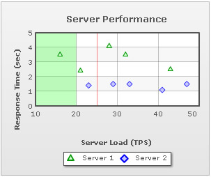

| FusionCharts ASP Class API > Advanced Usage > Creating Trendlines & Vertical Trendlines |
Trendline is used to display trends, targets etc. on the chart. FusionCharts ASP Class lets you create trendlines on charts. Lets find out how: addTrendLine() function of FusionCharts ASP Class lets you add a Trendline. Here is an example: |
Call FC.addTrendLine("startValue=44000;color=ff0000;displayvalue=Target") |
This function accepts delimiter separated trendline parameters like startValue, color(in hex color code), displayValue etc. The resultant chart might look like the image below: You can add a number of trendlines calling addTrendline() multiple times. The way of doing the same is shown below: |
Call FC.addTrendLine("startValue=42000;color=ff0000;displayvalue=Target;showOnTop=1")
Call FC.addTrendLine("startValue=30000;color=008800;displayvalue=Average;showOnTop=1")
Call FC.addTrendLine("startValue=50000;endValue=60000;color=0000ff;alpha=20;displayvalue=Dream Sales;showOnTop=1;isTrendZone=1") |
And the resultant chart is: |
| Creating Vertical Trendlines |
FusionCharts ASP Class API helps you create vertical trend lines/zones on scatter (XY Plot) or Bubble charts.The addVTrendLine() function of FusionCharts PHP Class lets you create Vertical Trendlines on charts. Lets find out how: |
' Add First VTrendLine Call FC.addVTrendLine("startValue=25;endValues=25;isTrendZone=0;color=FF0000;alpha=50") ' Add Second VTrendLine Call FC.addVTrendLine("startValue=10;endValue=20;alpha=25;color=00FF00") |
This function accepts delimiter separated vTrendline (Vertical Trendline) parameters. The resultant chart might look like the image below.  |